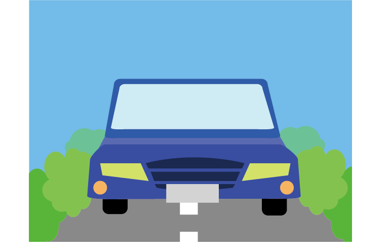
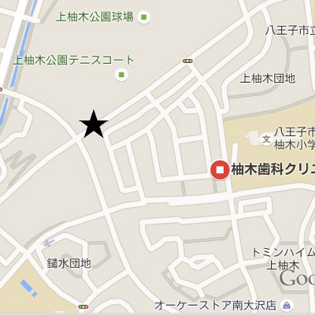

前から自転車が！！
危険度：★★☆☆☆

つねに前に注意しよう。せまい道で急に自転車がくるとよけきれないよ。

幅のせまい道でスピードを出すとあぶないよ。自転車にのっているときは、歩いているときよりもっと前方に注意しようね。


うわー！車が信号無視だ！！
危険度：★★★★☆
道路のまわりでは車に注意しようね。メールや音楽に夢中になってない？
幅のせまい道でスピードを出すとあぶないよ。自転車にのっているときは、歩いているときよりもっと前方に注意しようね。
信号無視は犯罪です。
あれ？だれかがうしろに…
危険度：★★★☆☆
多摩ニュータウンにはたくさんの公園や緑地（しぜんの多いところ）があります。暗がりは不審者（ふしんしゃ）にとってかくれやすい場所です。
暗いけど、車が走っているからあんしんだよね…うわあああ！！

危険度：★★☆☆☆
緑地の側はみんなの家や公園からはなれていて、人目がありません。車でのゆうかいじけんが起こりやすいです。
だれもいない…あっ！！
危険度：★☆☆☆☆
多摩ニュータウンのマンションの間の道は車道や大通りからはなれています。危険な目にあっても大人の目がとどきません。